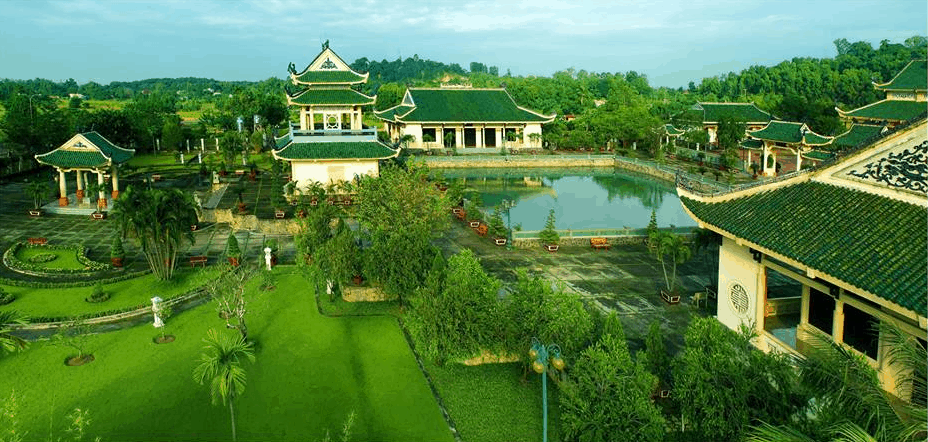
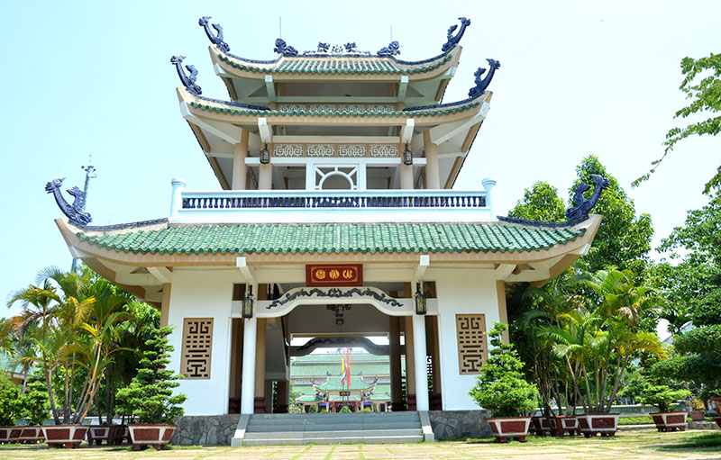
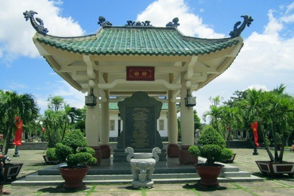

Văn Miếu Trấn Biên
Văn Miếu Trấn Biên (Phường Bửu Long, thành phố Biên Hòa), được coi là “Quốc Tử Giám” ở miền Đông. Đây là nơi thờ phụng các danh nhân văn hóa tiêu biểu của đất nước và là biểu trưng cho truyền thống học tập, hào khí và văn hóa của người Việt ở phương Nam.
Văn Miếu Trấn Biên ở Đồng Nai là sự tiếp nối truyền thống của Văn Miếu - Quốc Tử Giám ở Thăng Long (Văn miếu đầu tiên của nước ta, xây dựng từ năm 1070) và là biểu tượng cho tinh thần hiếu học - trọng người tài.
Theo sách Đại Nam nhất thống chí, tuy ra đời sau Văn Miếu - Quốc Tử Giám ở Thăng Long hơn 700 năm, nhưng Văn Miếu Trấn Biên được xây dựng sớm nhất ở miền Nam, trước các Văn miếu ở Vĩnh Long, Gia Định và ở kinh đô Huế.
Trong việc mở đất lập làng, kiện toàn bộ máy hành chính, tổ chức làng xã, ông cha ta đã ý thức được rằng: ngoài việc xây dựng và bảo vệ Tổ quốc, việc mở mang văn hóa thì xã hội mới ổn định và phát triển. Với ý nghĩa đó mà Văn Miếu Trấn Biên ra đời.

Văn Miếu Trấn Biên được xây dựng vào năm Ất Mùi (1715) dưới thời Chúa Nguyễn Phúc Chu và đã bị phá hủy hoàn toàn sau các cuộc chiến tranh. Năm 2001, Văn Miếu Trấn Biên được xây dựng lại với tổng diện tích trên 9 héc ta. Điện thờ được chia làm năm gian. Gian chính đặt bàn thờ Bác Hồ. Hai bên tả hữu là tượng thờ các nhà văn hóa – giáo dục của dân tộc như: Chu Văn An, Nguyễn Trãi, Võ Trường Toản...
Văn miếu Trấn Biên không chỉ có giá trị riêng đối với vùng đất Đồng Nai mà còn mang ý nghĩa về văn hóa - giáo dục, lịch sử...của cả khu vực Nam bộ. Tọa lạc bên khu du lịch Bửu Long, Văn miếu Trấn Biên còn là một điểm tham quan du lịch mang đầy ý nghĩa đối với đông đảo mọi tầng lớp nhân dân. Giữa vùng sông hồ thoáng đãng, giữa vùng cây xanh bóng mát, Văn Miếu Trấn Biên nổi bật lên với những vòm mái cong lợp gốm tráng men màu xanh ngọc, toàn bộ các mái nhà đều lợp một loại gốm màu xanh này.
Từ Văn Miếu Môn lần lượt là nhà Bia, Khuê Văn Các, giếng nước Thiên Quang Tỉnh, cổng Đại Thành, nhà thờ Đức Khổng Tử và sau cùng là Nhà thờ chính.

Qua cổng (Văn Miếu Môn) là nhà Bia. Ngày 18 tháng 05 năm 2002, Đảng bộ và nhân dân tỉnh Đồng Nai phục xây Văn Miếu và lập bia khái quát quá trình mở cõi, chiến đấu dựng nước và giữ nước, truyền thống văn hóa, giáo dục của dân tộc, của vùng đất Biên Hòa - Đồng Nai. Nhà Bia có Bài văn bia TRẤN BIÊN – ĐỒNG NAI RẠNG RỠ NGÀN NĂM VĂN HIẾN được khắc trên bia đá, bài văn bia do Giáo sư – Anh hùng Lao động Vũ Khiêu biên soạn, gồm 8 phần, mỗi phần 10 câu.

Nhà thờ Đức Khổng Tử: Khổng Tử là người khai sáng ra Nho giáo và Nho học. Ở Văn miếu Trấn Biên cũng đưa vào thờ Khổng Tử ở vị trí trang trọng nhằm thể hiện tinh thần tôn sư trọng đạo, tôn trọng tri thức.

Gian trung tâm thờ Chủ tịch Hồ Chí Minh - Vị Cha già kính yêu của dân tộc Việt Nam, danh nhân văn hóa thế giới. Sau lưng tượng thờ Người là hình ảnh Trống đồng Ngọc Lũ biểu tượng cho nền văn hóa Việt Nam và Quốc Tổ Hùng Vương.

Gian bên trái nhà là nơi thờ các danh nhân văn hóa Việt Nam như: Chu Văn An, Nguyễn Trãi, Nguyễn Du, Nguyễn Bỉnh Khiêm,Lê Quí Đôn… Gian bên phải thờ danh nhân đất Nam Bộ như: Võ Trường Toản, Đặng Đức Thuật, Trịnh Hoài Đức, Ngô Nhân Tịnh, Lê Quang Định, Bùi Hữu Nghĩa, Nguyễn Đình Chiểu…

Trong gian thờ này, còn có trưng bày 18 kg đất và 18 lít nước mang về từ Đền Hùng, biểu tượng cho 18 đời vua Hùng, cội nguồn của dân tộc Việt. Ngoài ra còn trưng bày các bia đá do Văn Miếu - Quốc Tử Giám gửi tặng.
Phía trước hai bên nhà thờ chính là Nhà Văn Vật Khố - nơi trưng bày các làng nghề truyền thống của Biên Hòa – Đồng Nai: nghề đồng, nghề mộc, nghề đá, nghề gốm. Sóng đôi hài hòa với Nhà Văn Vật Khố là Nhà Thư Khố - nơi trưng bày các thư tịch cổ, các tài liệu, sách báo ... viết về lịch sử, văn hóa, con người vùng đất Biên Hòa - Đồng Nai xưa và nay.
Văn miếu Trấn Biên còn có các khu sinh hoạt gồm có Nhà truyền thống nơi tổ chức các buổi họp mặt, tọa đàm, tìm hiểu về lịch sử, văn hóa, con người vùng đất Biên Hòa - Đồng Nai, các hoạt động sinh hoạt văn hóa, là nơi trưng bày triển lãm tranh ảnh, tư liệu về Văn Miếu Trấn Biên.
Văn Miếu Trấn Biên ngày càng được xây dựng hoàn chỉnh đàng hoàng, to đẹp, không chỉ là nơi thờ phụng mang ý nghĩa tâm linh, mà đã trở thành trung tâm văn hóa, điểm sinh hoạt chung thân thiện, gần gũi với mọi người. Phía đối diện Văn Miếu Môn là Vườn tượng các danh nhân văn hóa, nơi trưng bày các tượng danh nhân văn hóa Việt Nam. Vườn tượng còn có các mô hình nhà đặc trưng ba miền Bắc - Trung – Nam.

Ngày 18-8-2016 Bộ Văn hóa - thể thao và du lịch đã có Quyết định số 2894/QĐ-BVHTTDL công nhận Văn miếu Trấn Biên (phường Bửu Long, TP.Biên Hòa) là di tích lịch sử cấp quốc gia. Đây là điều có ý nghĩa đặc biệt quan trọng, nhằm phát huy những giá trị văn hóa, khẳng định vị thế của Văn Miếu Trấn Biên trong đời sống tinh thần của người dân Đồng Nai và người dân cả nước.